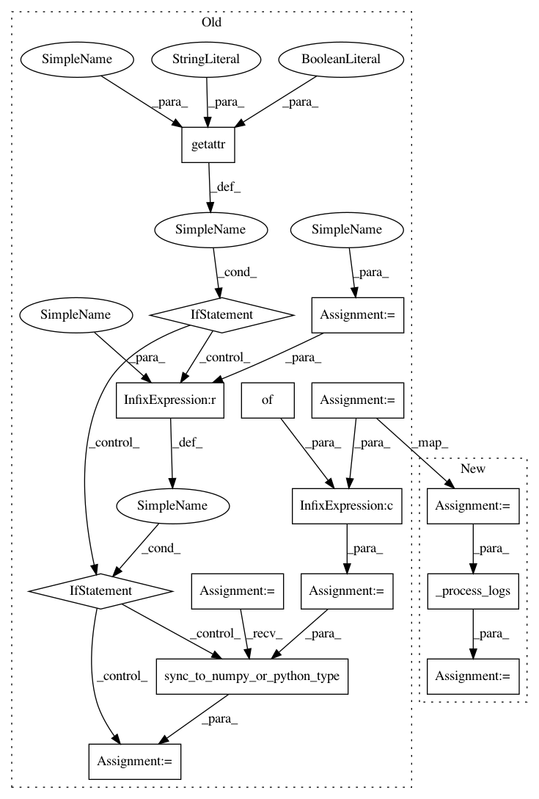

3fd3a0a499d456940de174aa051b9ee36f35afb5,keras/callbacks.py,CallbackList,_call_batch_hook_helper,#CallbackList#Any#Any#Any#,328
Before Change
def _call_batch_hook_helper(self, hook_name, batch, logs):
Helper function for `on_*_batch_*` methods.
logs = logs or {}
numpy_logs = None
if self._check_timing:
start_time = time.time()
for callback in self.callbacks:
hook = getattr(callback, hook_name)
if getattr(callback, "_supports_tf_logs", False):
hook(batch, logs)
else:
if numpy_logs is None: // Only convert once.
numpy_logs = tf_utils.sync_to_numpy_or_python_type(logs)
hook(batch, numpy_logs)
if self._check_timing:
if hook_name not in self._hook_times:
self._hook_times[hook_name] = []
self._hook_times[hook_name].append(time.time() - start_time)
After Change
if self._check_timing:
start_time = time.time()
logs = self._process_logs(logs, is_batch_hook=True)
for callback in self.callbacks:
hook = getattr(callback, hook_name)
hook(batch, logs)
In pattern: SUPERPATTERN
Frequency: 3
Non-data size: 15
Instances
Project Name: keras-team/keras
Commit Name: 3fd3a0a499d456940de174aa051b9ee36f35afb5
Time: 2021-04-06
Author: scottzhu@google.com
File Name: keras/callbacks.py
Class Name: CallbackList
Method Name: _call_batch_hook_helper
Project Name: keras-team/keras
Commit Name: 3fd3a0a499d456940de174aa051b9ee36f35afb5
Time: 2021-04-06
Author: scottzhu@google.com
File Name: keras/callbacks.py
Class Name: CallbackList
Method Name: on_epoch_end
Project Name: keras-team/keras
Commit Name: 3fd3a0a499d456940de174aa051b9ee36f35afb5
Time: 2021-04-06
Author: scottzhu@google.com
File Name: keras/callbacks.py
Class Name: CallbackList
Method Name: on_epoch_begin
Project Name: keras-team/keras
Commit Name: 3fd3a0a499d456940de174aa051b9ee36f35afb5
Time: 2021-04-06
Author: scottzhu@google.com
File Name: keras/callbacks.py
Class Name: CallbackList
Method Name: _call_batch_hook_helper